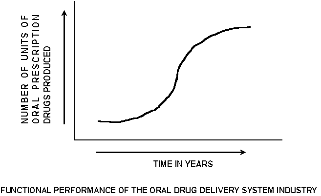
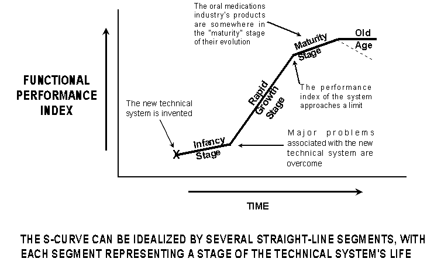
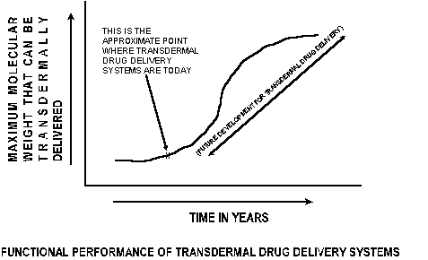

by
Gernot Mueller, M.D., President
James Kowalick, Ph.D., P.E., Technical Director
BioFutures Incorporated
Abstract
BioFutures Inc. is at the forefront of a revolution going on in the drug delivery industry. Posed for strategic alliances with major biomedical engineering and pharmaceutical firms, BioFutures and its partners have the capability to plan and control the future of drug delivery technology. Behind this capability is a creative approach for conceiving next-generation drug delivery systems and for conducting technology forecasting. The initial thrust of this approach is on transdermal systems.
PART 1. EVOLUTION OF TECHNICAL SYSTEMS
PATTERN OF DEVELOPMENT On a time scale, all product families, including drug delivery systems, move along the same steps as they evolve. The first point on the "time-scale" of a technical system is discovery, marking the "invention" of the product family. For various reasons (lack of investment capital, formidable technical drawbacks, industry disinterest, etc.,) it takes many years or even decades before the chief problems associated with the new product family are resolved. Only then is the product ready for the marketplace. The "functional progress" of a typical product family can be depicted using S-curves.
Consider the oral delivery of drugs - the most prominent form of drug delivery used today, representing a multi-billion dollar industry. The "functional performance index" that best describes the progress of an entire industry in the free marketplace is the total number of units produced, and this function is illustrated below.

The oral medications industry is a rather mature industry. As indicated by this generalized curve, the industry went through a period of time during which little progress occurred, reached a point where sales (and therefore, production) started began to rise rapidly, and then approached a limiting level of production. All product families - all technical systems - follow the "S-curve" path as they move from the point of discovery to their demise. As illustrated below, they go through an "infancy" stage where little apparent progress occurs (although behind the scenes there is an effort to resolve the reasons for this poor performance); then, when the chief problems associated with the product family are resolved, the performance of the product family rises rapidly, with improvement following improvement.

During this "rapid rise" stage, competitors begin producing similar products, and guaranteeing a high rate of improvement. The product family flourishes in the marketplace. Ultimately some "saturation" limit is reached which fixes the market possibilities for the product family. The job now, is to maintain the "cash cow." This is the thrust of the associated technical efforts. The product has reached the "maturity" level, and all further innovative effort is downplayed. For the most part, this is the position of the oral medications industry today.
Although the functional performance of an entire industry is measured in terms of the number of product units produced by that industry, the functional performance of an individual product is measured in a unit that is more "technical." For example, there are several important performance capabilities for transdermal drug delivery systems. One of these is molecular size of the drug to be delivered.
Today’s transdermal drug delivery systems are technically limited by the size (e.g., molecular weight) of the molecule that can be successfully moved through the skin and into the body. This "limiting" molecular weight that can be successfully delivered transdermally is therefore a measure of the progress of development of transdermal delivery systems. As transdermal systems evolve, it is expected that they will become capable of delivering drug molecules of ever-increasing size and complexity. If this "limiting molecular size" is plotted against time, the resulting profile would be expected to assume the shape of an "S" curve, as illustrated below.

This S-curve for transdermal drug delivery systems addresses only one system function (although it is a very important one): the capability of the system to deliver higher-molecular weight molecules. The "X" point on the S-curve indicates that the transdermal systems of today are in the "infancy" stage of their possible evolution. A major challenge for designers, scientists and researchers to discover how to deliver an entire range of larger-molecule therapeutic agents through the skin, in a manner that adds value for users of transdermal patches and similar devices.
CREATIVE SECRETS THAT ENABLE NEXT-GENERATION DESIGNS (AND NEXT-GENERATION BIO-MOLECULES) There are two "secrets" that companies can apply to take immediate steps leading to capturing major shares of the marketplace. The first "secret" is how to rapidly and successfully expand the number of drugs deliverable by transdermal means. The second "secret" is how to rapidly and accurately identify next-generation "bio-molecules" that satisfy specific therapeutic functions.
These "secrets" are already known, and they have been organized in a creative approach that permits researchers and designers to (1) conceive and design next-generation, transdermal drug delivery products, and (2) identify next-generation bio-molecules. The former objective (rapidly conceiving next-generation transdermal drug deliver products involving drugs that are currently not deliverable) is discussed in Part 3 of this paper. Before discussing next-generation drug delivery solutions, however, it is instructive to consider the capabilities of current transdermal drug delivery systems and associated technologies.
PART 2. THE PRESENT SITUATION
NEW DRUGS VS. NEW DRUG DELIVERY SYSTEMS Getting a new drug out is a high-risk process that takes many years. New-drug firms must endure high capital investments, long R&D times, and historically low probabilities for success. This is a major reason for the intense corporate interest in drug delivery technology. From a development-time perspective, companies engaged in conceiving and developing new drug delivery systems have the edge on companies out to conceive and develop new drugs. The former group has the advantage of lower risks associated with FDA review. Because they can focus on drugs already approved, they are facing significantly smaller outlays of cash for research, conception and development - and they can make it happen faster than their new-drug counterparts.
TECHNOLOGY CHAOS But that’s where the glory road ends. The state of drug delivery technology today has been characterized as being too slow, more than moderately active, and chaotic. "Too slow" - because of the complex technical problems associated with existing drug delivery approaches, and the snail’s pace of current research. "More than moderately active" - because of industry and venture capital support for the development of higher return-on-investment, alternative delivery systems that have excellent chances for marketplace success. "Chaotic" - because there is a lack of understanding about the evolutionary nature of drug delivery technology: the individual steps that make up the technology-improvement staircase. Drug delivery product "breakthroughs," when they do occur, tend to appear at random.
Chaos is particularly noticeable in the new-product conception stage (the so-called "Fuzzy Front End") of the total system development cycle. Industry-wide, this lack of technological organization, and the inability to manage it in a controllable and predictable way, mean significant losses of dollars, time, other resources, and marketplace potential. The bottom line? Shotgun approaches are alive and well in developing next-generation drug delivery technology, and they are not working so well.
DRUG-DELIVERY SYSTEMS TODAY: PRODUCT DEVELOPMENT GOALS Drug delivery companies are out to conceive and develop improved systems for introducing drugs into the body. These systems take the form of topical gels; time release capsules; computerized inhalers; lozenge-type sedative pain killers; chemotherapy gels injected directly into cancer tumors; nitroglycerin, smoking cessation, hormone replacement and contraception patches; oral wafers that stick to the gums, and other products.
These new-product goals address some of the chief problems recognized by the industry. One problem is that only a relatively small part of administered drugs reach their intended target sites. Therefore treatment often involves larger doses to make up for these losses. The excess makes itself known through side effects that can show up anywhere in the body. Side effects are particularly pronounced with orally taken drugs. Seeking drug channels other than the mouth and the gastrointestinal system can be more effective for a wide variety of medications.
Another problem is that there are some drugs (such as insulin, any protein, and gene therapy compounds) that simply can’t be taken orally, because the quantity administered either never survives enroute to the target site in the body, or it arrives at the target site in insufficient dosage.
Intrusive forms of drug delivery - injections for example - represent yet another problem. They are endured by patients simply because there is no other way.
Topical gels, inhalers, patches and other new means of drug delivery techniques have the potential advantages of easing discomfort, ensuring greater compliance by patients, reducing the number of doses needed, minimizing side effects, and opening the doors for some biotech drugs (such as proteins), which would make great drugs if only they could reach their targets before being rendered worthless by stomach acids and other body fluids.
One technique - the administration of drugs by transdermal routes - offers the key advantage of being relatively painless. Other advantages include rapid response, high reliability of effective delivery, and its "background" nature - patients can go on with their lives while receiving treatment.
TRANSDERMAL PATCHES The transdermal (through the skin) drug delivery approach serves to illustrate "Fuzzy Front End" problems encountered with all the other new drug delivery approaches. For centuries, topical products (creams, gels, lotions, etc.) have been used to treat local skin disorders. The idea of using the skin as a route for systemic drug delivery, however, is of fairly recent origin. The further idea of incorporating drugs in a "patch" that supplies them by transdermal means is even more recent. The most important issue in the development of new transdermal drug delivery systems is to modulate the transport of penetrants through the skin on demand.
Skin patches hold promise for transdermal administration of a broad scope of medical treatments. Patches control the release of drugs and avoid peaks and valleys associated with multiple-dose oral medication, combining extended duration of delivery with patient comfort, while significantly enhancing patient compliance. Patch delivery is easier than injection, and eliminates the risk of infection. A number of drugs may be administered transdermally. Transdermal drug absorption significantly alters drug kinetics. Success depends on a variety of biological physiological, biochemical, and biophysical factors including the following:
LIMITATIONS OF CURRENT TRANSDERMAL DELIVERY SYSTEMS Only a few drug candidates are currently available in dosage forms for transdermal drug delivery. One of the earliest applications was scopolamine patches used to prevent motion sickness and treat nausea.
Another highly popularized use was Nicotine patches worn on the upper arm to resolve the nicotine "fixes" for smoking cessation.
A third application is hormone replacement - for example, estradiol for estrogen replacement in post-menopausal women.
Fentanyl patches are used to treat cancer pain or chronic pain syndromes.
Testosterone patches for men are currently worn on the abdomen, back, thighs, or upper arms.
Nitroglycerin patches are administered for alleviating angina.
Various contraception patches have also been developed.
Oxybutynin transdermal patches have been under development for the treatment of urinary incontinence, a bladder disorder that results in uncontrolled release of urine (the oral form of the drug has several adverse side effects including dry mouth, dizziness and constipation).
In the cosmetics industry, vitamin C patches are promoted to improve facial-line appearance and to de-emphasize wrinkles. Other ingredients such as sea kelp are also delivered through the skin.
Certain topical compositions could also be applied in patch form: a cream-like eutectic mixture of local anesthetics (EMLA) to reduce the surgical procedural pain; corticosteroid cream administered for its local effect on skin maladies; and TAC for anesthesia when suturing small lacerations.
A DESIGN CONFLICT The transdermal delivery approach is not without its problems and design challenges. A major problem is the slow penetration of compounds through the skin. The skin has an extremely low permeability, so large molecules cannot readily pass through.
The low permeability is a result of the structure of the very thin, outermost skin layer called the stratum corneum, which consists of flat dead cells filled with keratin fibers surrounded by lipids - fatty molecules that prevent anything harmful from getting through the skin. Useful substances like drugs are generally prevented from entering and being transported. Only a few specific drugs are available for delivery via transdermal means - those substances having relatively low molecular weights.
The most demanding problems represent conflicts. The conflict here is:
LIMITATIONS OF RESEARCH, EXPERIMENTATION AND MODELING The conduct of research, scientific experimentation and process modeling to resolve the conflict described above ("Large molecules cannot, yet must, enter the skin") have been historically ineffective, and are rarely responsible for major product breakthroughs. There is a lack of understanding of how transdermal delivery really works. Modeling approaches for predicting transdermal drug delivery have had generally poor predictive power.
The skin itself is a rather complex, heterogeneous membrane; its penetration pathways and skin lipid-structure are not well understood. In many current delivery systems, penetration enhancers increase drug transport through the skin. An important step would be to develop a better understanding of the functioning of penetration enhancers in the stratum corneum lipid structure and in the drug penetration pathway.
The researcher’s aim is to develop models that incorporate all these factors and effects, and to use the models to predict systemic drug levels likely to result from a given drug delivery system. Unfortunately, research in this area has proven to be slow and relatively ineffective, and it does not effectively support the conception and development of next-generation delivery systems.
CURRENT DEVELOPMENTS Based strictly on developments (results!) to date, it can be stated that no well organized development plan exists for rapidly and effectively achieving breakthrough products for the transdermal drug delivery marketplace. A solution to this state of chaos is presented in Part 2 of this paper. Nevertheless, there been developments in several areas related to transdermal drug delivery systems, some of which are summarized below.
Use of External Effects to Enhance Delivery: Ultrasonics Animal and human cadaver experiments with patch-delivered insulin "ointment" for diabetes treatment have shown promise for increasing skin permeability through the use of low-frequency ultrasound (sonophoresis), and thereby controlling blood concentration levels. This was accomplished in spite of the fact that insulin has a large protein structure. This diffusion-amplification technique has also been used with gamma-interferon to assist immune systems in patients suffering from viral infection or cancer, and with erythropoeitin for treating severe anemia. The molecular weights of these drugs is roughly two orders of magnitude higher than the molecular weights of molecules currently administered through skin patches.
It has been theorized that an even lower frequency of ultrasound waves would make transdermal transport of insulin even easier, since it is known that cavitational effects increase as frequency is lowered. Ultrasound enhancement did not cause permanent damage to the skin’s protective properties or to underlying muscle tissues.
The time has not arrived when diabetics can wear smaller-than-wrist-watch devices that would monitor blood levels (e.g., glucose), as well as control ultrasound to deliver the appropriate dosage profile of insulin from a patch on demand, eliminating any need for a patient to track and treat his condition. Such devices could be employed for a wide variety of drugs and applications. The ultrasonic probe used in the insulin experiments is as big as a pen - too large and too expensive for patch use.
Absorption Enhancers Several absorption enhancers are currently under development. The function of these substances is to increase, by chemical, biological, and/or physical means, the quantity and control of the chosen therapeutic agent passing through the skin. There are several principles being used to develop these substances. Because of the proprietary nature of the enhancers being tested, these principles will not be discussed here.
Other Portals Although the focus of this paper is on transdermal delivery, there are also a number of highly innovative delivery methods under development, that rely on delivery from other locations. These include (1) The Mouth Lining - a case in point is fast-acting, sedative lozenges that allow drugs to be absorbed through the mouth lining; (2) Inhalants - The delivery of large, otherwise undeliverable molecules to the lungs; (3) Under-Skin Injection Systems - Slow-release polymers are injected under the skin, releasing hormones; (4) Central Nervous System Drugs - Systems that work across the blood-brain barrier; (5) Foam Systems - Foam-based technology that encapsulates a "friendly" lipid based substance around a wide variety of drugs, for controlling and managing cancer and pain, among other illnesses; (5) Ocular Delivery Systems - New drug structures that gradually release drugs into the eye; (6) Advanced Oral Delivery Systems - new protective materials are combined with therapeutic agents to increase their survivability on the way to the target site within the body.
PART 3. THE REVOLUTION IN CONCEPTUAL DESIGN
OLD APPROACHES TO CREATIVITY
The present methods and processes for conceiving and developing transdermal drug delivery systems are based upon traditional tools and practices that are relatively ineffective. The result of applying these traditional tools and practices is generally slow, step-wise (not true breakthrough) progress.
Brainstorming One of these ineffective approaches is "brainstorming." Specialists in a field of technology are quite familiar with the limitations and problems of the technology, and with most known directions for addressing these limitations. On the basis of this knowledge and their experience, ideas are formed in their minds of the necessary steps to take. Far more often than not, these "paths to success" are really dead ends that nevertheless require the use of valuable organizational resources. If specialists from other branches or technologies were attracted to examining, they may be able to form a more objective vision of the solution. This leads to the idea of involving "outsiders" in the quest for conceiving and developing next-generation systems. Therefore since the 1940’s the technical community has been practicing the art of brainstorming. Unfortunately as mentioned above, brainstorming has not been very effective for conceiving next-generation systems, or even for solving complex technical problems.
There are several reasons for the ineffectiveness of brainstorming. The "brainstorming" group intentionally consists of several outsiders who are not specialists. Yet a specialist’s understanding of the problem situation is conducive to creating higher-level ideas - which outsiders cannot create because of their lack of detailed technical understanding. Another point is that brainstorming does not lead along an ideal path, towards an "ideal solution." The ideas that come from brainstorming are relatively random - albeit focused towards a general target. Furthermore, brainstorming has already been demonstrated to be highly effective, but only for addressing problems that are relatively low-level and general. Therefore it makes sense to apply this method only for solving problems of the lowest level of complexity.
Trial and Error Another method for solving problems or conceiving improved systems is based on sequential or concurrent experimenting. This is the "Trial and Error" approach. Although the trial and error approach is infrequently referred to, it is nevertheless a cornerstone of the scientific experimental approach:
"Try a particular avenue of solution under certain fixed conditions; collect and observe the results; conduct a subsequent experiment with conditions modified in a way that increases the probability of reaching the experimental goal. Keep doing this - trial after trial - until success is reached, or until the experimental goal is abandoned."
The trial and error approach may not have been invented by Thomas Edison, but this prolific American inventor has been one of its most prominent users. It has been said that "Edison’s greatest invention was the invention factory - forerunner of today’s corporate research and development programs which still employ the trial and error approach, only on a much larger scale than Edison." In today’s corporate world, entire teams are dedicated to investigating "areas" of research or development related to a designated technical system. These investigations all involve the application of Edison’s trial and error approach.
It is easy to criticize the trial and error approach. There are simply too many trials that end up with no results ("errors"). The number of "trials" increases as technical problems and design challenges increase in complexity. Trials generally follow the "path of least resistance" - rarely moving in the direction of an ideal solution. In fact, experimental directions are usually predetermined by both the experiences, and the generally narrow specialty areas of the investigators.
In a newspaper interview Thomas Edison, in defining ‘genius,’ also described the chief problem of the trial and error approach: " . . . one percent inspiration and ninety-nine percent perspiration." It is precisely this ‘perspiration’ - measured in the use of dollars, people and equipment - that makes the trial and error approach to creativity wasteful, slow, and generally ineffective.
Requirements for an Ideal System Any superior problem-solving or solution-creating approach must be goal-oriented, and the goal must take the form of the ‘ideal system.’ The ideal system as a goal is a guidepost for investigators, steering them away from low-level design solutions, and pointing them, instead, in the direction of the best possible system - one that is not only conflict-free, but also compromise-free. Such a system may not be fully achievable, but as a design goal it demands that investigators abandon design solutions full of tradeoffs and compromises, and that are complex and costly.
THE IDEAL DRUG DELIVERY SYSTEM (IDDS) Some of the characteristics of an "ideal transdermal drug delivery system" are specified below:
These ideal characteristics are not a wish list. They represent idealized targets to guide the course of future system conception and system development. What is missing from this list is an innovation approach for getting there (1) rapidly, (2) with minimal expenditure of corporate resources, and (3) with a system design (drug delivery product) that makes minimal compromises from the ideal system (IDDS) described above.
RAPIDLY FIELDING NEXT-GENERATION TRANSDERMAL DRUG DELIVERY SYSTEMS An innovative conceptual and developmental approach already exists. BioFutures’ proprietary Technical Innovation Algorithm (TIA) has demonstrated its capability for rapidly conceiving and developing next-generation drug delivery systems. These systems approach the Ideal Transdermal Drug Delivery System guidelines listed above. The following discussion relates only to transdermal delivery.
Where are Transdermal Drug Delivery Systems on the S-Curve? It has already been shown in Part 1 that the level of development of technical systems can be ascertained by one or more "functional performance indicators." Over time this "profile of functional performance" takes on the shape of an S-curve. When the functional performance index chosen is the limiting molecule size that can be delivered through the skin, today’s transdermal systems are seen to be in the "infancy" part of the S-curve. This means that there are opportunities for those companies who discover how to move up the S-curve.
The Laws of Transdermal System Development An analysis of the global patent collection indicates that all technical systems follow a small number of ‘laws’ as they move up the S-curve of technical evolution. These laws are known for transdermal drug delivery systems. The history of transdermal systems has already borne out the integrity of the laws. In the hands of experts skilled in applying them, the laws can also be used to produce detailed descriptions and sketches of next-generation (future!) transdermal delivery systems. It can be argued that such breakthrough systems will appear anyway, and this is true - but they only appear after years or even decades of costly experimental trials. The difference is simple. With BioFuture’s Technical Innovation Algorithm, these next-generation designs can be identified - in design detail - now. Then they can be rapidly developed for marketplace use.
TIA was developed, in part, by applying eleven "laws of development of technical systems" first to generic product families, and then to specific products such as transdermal delivery systems. TIA defines transdermal systems that are capable of delivering much larger drug molecules that are being delivered by today’s transdermal systems. TIA has an intelligence that "knows" what the technical problems are, and "knows" how to address them.
The Mission of BioFutures BioFutures Inc. applies its creative approaches to next-generation designs, with its pharmaceutical and drug delivery company partners, who represent the "subject matter experts." BFI forms strategic alliances with major drug delivery producers, jointly conceiving and developing transdermal product families geared to capture the marketplace.
LAWS OF DEVELOPMENT OF TRANSDERMAL DRUG DELIVERY SYSTEMS The general laws of development of Transdermal Systems are briefly listed below. From these laws, BFI developed the details of its powerful technical innovation algorithm, TIA. TIA is capable of resolving virtually all technical system problems - even those as complex as the "larger molecule" limits imposed on today’s delivery systems.
LAWS OF DEVELOPMENT OF TRANSDERMAL DRUG SYSTEMS
UPON WHICH THE TECHNICAL INNOVATION ALGORITHM IS BASED
- Transdermal drug delivery systems follow the general law of developing and evolving according to an "S-Curve" profile (the plot of a major index of system performance versus time).
- All transdermal systems consist of four essential "parts" - an energy source; a sub-system that transmits system energy to those locations where it is required for performance; the part (or parts) that actually accomplish the main function of the system; and, a "control" system that monitors and controls system functioning. These four essential parts need to be "complete" in order for the system to function at a high level.
- A most important aspect of the further development of transdermal drug delivery systems will be breakthroughs in how effective energy is transmitted throughout the system.
- There are six measures of "ideality" of transdermal drug delivery systems. These can be used as predictive "gauges" to indicate (A) where a particular transdermal delivery system is on its S-Curve, and (B) the next developmental design step.
- Transdermal drug delivery systems of the future will minimize human involvement, and will even include additional features and functions previously requiring human actions.
- There will always be a specific "sub-system" that represents the largest opportunity for system development. This opportunity can be identified by through the use of TIA.
- Transdermal drug delivery systems developed by "traditional" approaches will become (in fact, are becoming) far more complex in their construction (this is not true for TIA-developed systems, which stress system simplicity and elegance).
- An important developmental direction that Transdermal Delivery Systems will take is "the path of increasing flexibility, controllability, directability and adjustability."
- Major breakthroughs in Transdermal Drug System designs will occur because of the introduction of new, modified energy sources (detailed information about this law may not be provided because of its highly proprietary nature).
- This tenth law relates to the relationship of Transdermal Drug Delivery systems with other existing and new systems.
- Next-generation Transdermal Drug Delivery systems will show (A) improved degrees of coordination among certain system parts, and (B) intentional dis-coordination among other system parts. The purpose of this "coordination or dis-coordination by design" is to achieve significant breakthroughs in overall system performance.
ADVANCED DEVELOPMENTS AT BFI The development of the Technical Innovation Algorithm over the last four years was a major achievement. Applying it, teams charged with designing next-generation transdermal delivery systems are able to leap-frog the competition. Next-generation systems can be rapidly developed, and upon completion of regulatory review, fielded to the marketplace.
Prediction of Future Therapeutic Agents BioFutures has also developed a proprietary, Algorithm for Molecular Predictions (AMP). AMP is a forecasting algorithm that rapidly and accurately identifies next-generation "bio-molecules" that satisfy specific therapeutic functions. In order to apply this algorithm, drug designers must first identify the future molecule’s intended "function." Next they are required to answer a series of questions. then the algorithm reduces the molecular choices to a narrow selection of molecules that have a high probability of satisfying the intended therapeutic function. Further refinements in AMP are underway.
SUMMARY There are two general paths for developing next-generation drug delivery systems: (1) the traditional path which is highly probabilistic, expensive and resource-heavy; and (2) the path suggested by the laws of development of technical systems, which eliminates useless experimental trials. BioFutures’ Technical Innovation Algorithm was developed to assist drug delivery system designers to rapidly conceive and develop next-generation drug delivery systems.
~ ~ ~ ~ ~ ~ ~
Editor’s Note: Drs. Mueller and Kowalick may be contacted at BioFutures, Inc., 930 Tahoe Blvd., #802, Suite 461, Incline Village, Nevada 89451. Tel: (530) 692-1944/2441; Fax: (530) 692-1946/2354. E-Mail: gngmuel@succeed.net, and headguru@oro.net.